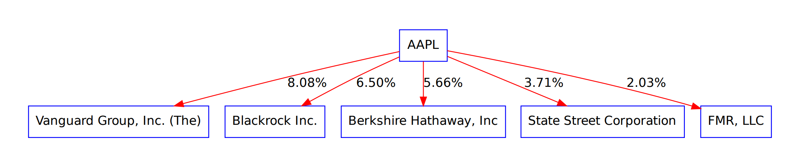

{{ bootstrap.load_css() }} {% from 'bootstrap/form.html' import render_form %}
Hello, {{ name }}!
Input your info!
{{ render_form(form=form, form_type="basic") }} {{ bootstrap.load_js() }}
{{ title }}

Show/Hide Stocks Holders Graph